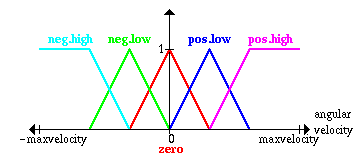
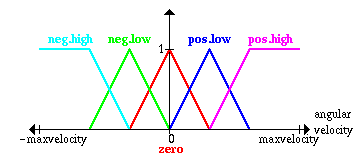

Контроллеры нечеткой логики - наиболее важное приложение теории нечетких
множеств. Их функционирование немного отличается от работы обычных контроллеров;
для описания системы используются знания экспертов вместо дифференциальных
уравнений. Эти знания могут быть выражены естесственным образом с помощью
лингвистических переменных,
которые описываются нечеткими множествами.
Тоже самое делается для угла между тележкой и мачтой маятника и для угловой скорости изменения этого угла
 
Пожалуйста заметьте, что для упрощения предполагается, что начальное
положение мачты около центра справа, так что угол более чем, скажем,
45 градусов в любом направлении по определению никогда не возникнет.
На следующей странице определим некоторые правила, которые желательно применить в данной ситуации.